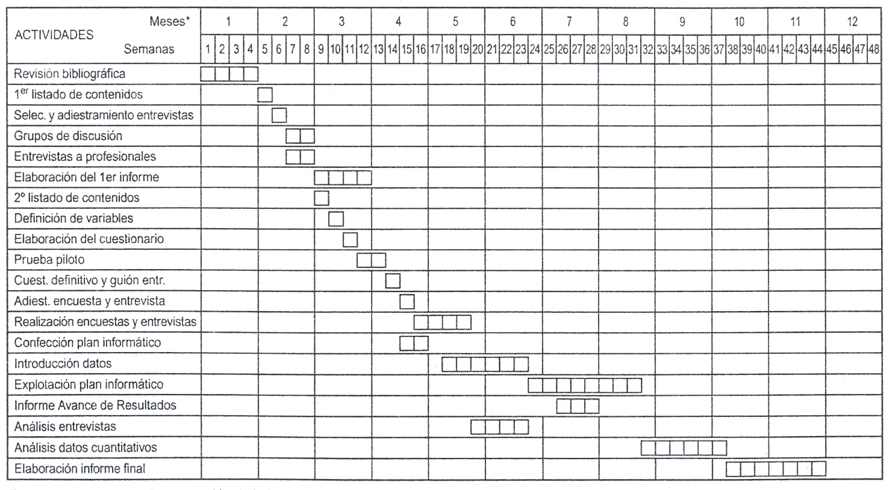

Compendio
Implantación de procesos de automatización de tareas dentro de un centro de datos y monitoreo de servicios del sistema operativo.
Objetivos
El objetivo de este proyecto es implementar procesos de automatización
de tareas dentro de un centro de datos y monitoreo de servicios del
sistema operativo. Esto permitirá mejorar la eficiencia, la productividad
y la confiabilidad de la infraestructura de TI.
Beneficios
Los beneficios esperados del proyecto son los siguientes:
Mejora de la eficiencia:
La automatización de tareas permitirá liberar tiempo y recursos para que los equipos de TI se concentren en tareas más estratégicas.
Aumento de la productividad:
Los procesos automatizados se pueden ejecutar de manera más rápida y precisa que los procesos manuales.
Mejora de la confiabilidad:
La automatización de tareas ayuda a reducir los errores humanos, lo que puede mejorar la confiabilidad de la infraestructura de TI.
Etapas del proyecto
Planeación:
En esta etapa se definirán los objetivos del proyecto, se realizará un análisis de la situación actual y se diseñarán los procesos automatizados.
Implementación:
En esta etapa se desarrollarán los procesos automatizados y se integrarán a la infraestructura de TI.
Pruebas:
En esta etapa se probarán los procesos automatizados para garantizar su correcto funcionamiento.
Implementación definitiva:
En esta etapa se implementarán los procesos automatizados de manera definitiva.
Herramientas y tecnologías
Para implementar los procesos automatizados se utilizarán las siguientes herramientas y tecnologías:
Herramientas de automatización:
Estas herramientas permiten crear y ejecutar scripts para automatizar tareas.
Herramientas de monitoreo:
Estas herramientas permiten monitorear el estado de los sistemas y servicios de TI.
Recursos humanos
El proyecto requerirá los siguientes recursos humanos:
Un equipo de TI responsable de la planificación, implementación y pruebas de los procesos automatizados.
Usuarios finales que utilizarán los procesos automatizados.
Cronograma
El proyecto se estima que se completará en un plazo de x Tiempo.

Presupuesto
El presupuesto estimado para el proyecto es de $x.
Conclusión
La implementación de procesos de automatización de tareas dentro de un centro de datos y monitoreo de servicios del sistema operativo es una iniciativa que puede aportar importantes beneficios a las empresas. Este proyecto permitirá mejorar la eficiencia, la productividad y la confiabilidad de la infraestructura de TI, lo que puede traducirse en ahorros de costos y mejoras en el servicio al cliente.
Recomendaciones
Para garantizar el éxito del proyecto,
se recomienda lo siguiente:
Involucrar a los usuarios finales en el proceso de planificación y diseño de los procesos automatizados.

Realizar pruebas exhaustivas de los procesos automatizados antes de su implementación definitiva.
Ofrecer capacitación a los usuarios finales sobre el uso de los procesos automatizados.

¡¡GRACIAS POR SU ATENCIÓN!!
:D